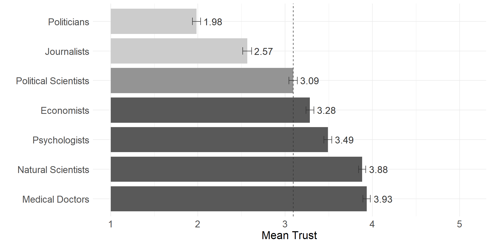
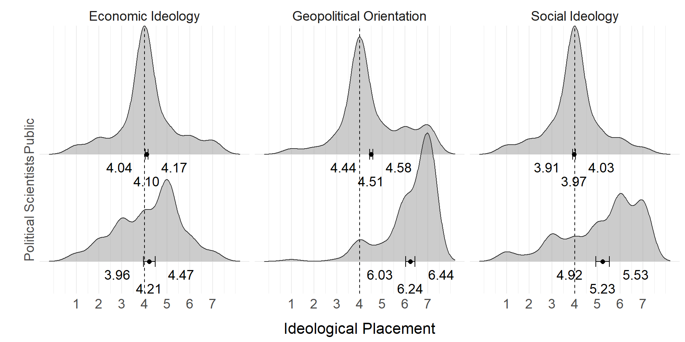
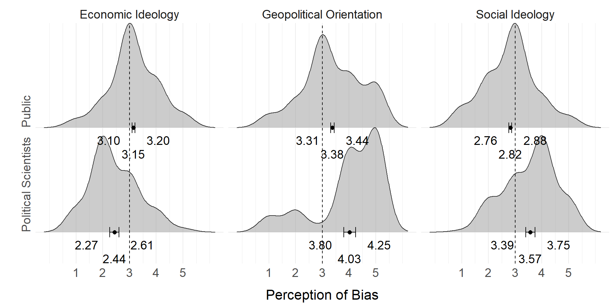
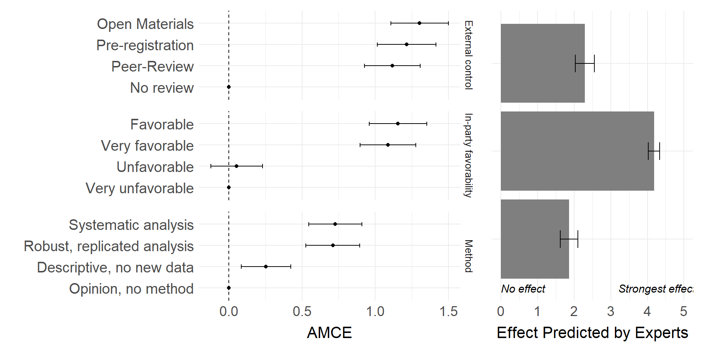

Trust in Political Science in Emergent Contexts
Aarhus University
Northwestern University
The Issue of Lukewarm Trust
Overall, scientists evoked positive perceptions given that all social evaluations and trust ratings were above the mid-point of the scales (though note that political scientists and economists evoked noticeably lower ratings of morality and trust compared to other occupations).
When asked how confident they were that various professions act in the best interests of the American public, Americans gave middling reviews of political scientists. [..] Confidence in political scientists is similar to that in journalists; Democrats are generally more confident, and Republicans less. Such confidence is generally less than that placed on economists, English professors, and historians.
Showing Value of Research
- Trusting public is a precondition for social impact, Lupia (2013)
- Lukewarm trust threatens impact, funding, and evidence-based reasoning
- A lively debate in the US (APSA task force, PS special issue) addresses the field’s public value, Lupia and Aldrich (2015)
- But it centers on well-established contexts; recommendations elsewhere are absent
Research Gap
Trust Under Debate
Trust Divides
Does trust align with social and political divides?
Trust Under Debate
Improving Practice, Maintaining Integrity
Can trust improve without changing findings?
- Still probably subject to partisan motivated reasoning: a partisan lens discounts evidence, Lodge and Taber (2013)
- To not compromise integrity, we can only improve research practice
- Open science, credibility revolution yield quality signals seen as raising trustworthiness, Grossmann (2021); Jamieson et al. (2019)
Czech case
- More representative of the field globally: most studies rely on U.S. samples, but Cologna et al. (2025)
- Empirical focus is predominant (not to be taken for granted!), yet research remains semi-peripheral, Eberle et al. (2021)
- Underdeveloped in terms of practices
- Not at the cutting edge of current trends, given the post-communist context and its (dis)advantages
Methods
Mass Survey
- 1530 respondents, online sample, quotas, July 2025
- Main DV: How much do you personally trust political scientists?
- OLS, with controls, replicated with different measures
Experiment
- Conjoint-style design (but scale): “Would you consider such research trustworthy?” (11-point scale)
- Six repeated tasks + checks; seventh replicates the first
- OLS with respondent-clustered robust SEs
- Demanding, still: 67.4% passed strict attention check; 62% within ±1 point in replication task
Experiment
Example Vignette

Expert Survey
Testing against expectations of political science community
- Perceptions of trust
- Ideological bias
- Expectations about experimental results
- Prevalent questionable research practices, Schneider et al. (2024)
All political science departments in Czechia, 9 universities, including PhD students
Response rates similar across gender, department type or seniority
Results
Trust Divides

Trust Divides
| Predictor | Est. | 95% CI | p | Est. | 95% CI | p |
|---|---|---|---|---|---|---|
| Intercept | 2.58 | 2.38–2.79 | <0.001 | 3.32 | 2.98–3.66 | <0.001 |
| Income | 0.09 | 0.03–0.14 | 0.002 | 0.05 | -0.01–0.10 | 0.093 |
| Woman | -0.02 | -0.11–0.08 | 0.742 | 0.02 | -0.07–0.12 | 0.633 |
| Age (std.) | -0.13 | -0.17–-0.08 | <0.001 | -0.11 | -0.16–-0.06 | <0.001 |
| CECT (std.) | 0.02 | -0.03–0.07 | 0.391 | 0.02 | -0.03–0.07 | 0.452 |
| Ideology | ||||||
| Economic | 0.00 | -0.04–0.04 | 0.963 | |||
| Social | -0.01 | -0.06–0.03 | 0.500 | |||
| Transnational | -0.16 | -0.20–-0.12 | <0.001 | |||
| Education | (reference: | Elementary) | ||||
| High school | 0.09 | -0.02–0.20 | 0.115 | 0.06 | -0.05–0.17 | 0.258 |
| University | 0.06 | -0.08–0.19 | 0.405 | -0.03 | -0.17–0.10 | 0.607 |
| Settlement | (reference: | <2,000) | ||||
| 2,000–19,999 | 0.03 | -0.11–0.16 | 0.721 | 0.03 | -0.11–0.16 | 0.682 |
| >20,000 | 0.03 | -0.09–0.15 | 0.634 | 0.02 | -0.10–0.14 | 0.693 |
| N | 1428 | 1428 | ||||
| R² / Adj. R² | 0.031/0.026 | 0.080/0.073 |
Trust Divides

Trust Divides

Trust Divides
| Predictor | Est. | 95% CI | p |
|---|---|---|---|
| Intercept | 2.65 | 2.39–2.91 | <0.001 |
| Economic | |||
| Left-wing bias | -0.26 | -0.42–-0.09 | 0.003 |
| Right-wing bias | -0.11 | -0.25–0.04 | 0.148 |
| Social | |||
| Conservative bias | -0.06 | -0.22–0.11 | 0.500 |
| Liberal bias | -0.12 | -0.27–0.02 | 0.091 |
| Transnational | |||
| Anti-Western bias | -0.05 | -0.23–0.13 | 0.591 |
| Pro-Western bias | 0.16 | 0.02–0.31 | 0.029 |
| Socioeconomic controls | ✓ | ||
| N | 998 | ||
| R² / Adj. R² | 0.048 / 0.034 |
Research Practices

Research Practices
| Questionable Research Practice | % | SE | N |
|---|---|---|---|
| Methodological Rigor | |||
| HARKing (Quantitative) | 54% | 7.2% | 48 |
| Ignoring Practical Significance | 47% | 6.9% | 53 |
| Redundant Publication | 47% | 7.1% | 49 |
| False Qualitative Claims | 37% | 6.9% | 49 |
| HARKing (Qualitative) | 36% | 7.1% | 45 |
| Overstating Results | 33% | 7.2% | 43 |
| P-Hacking | 32% | 7.7% | 37 |
| Misinterpreting Non-Significant Results | 29% | 7.0% | 42 |
| Undisclosed Data Recycling | 25% | 6.1% | 51 |
| External Control | |||
| Citation without Reading | 77% | 5.8% | 52 |
| Selective Citation to Appease Reviewers | 60% | 6.7% | 53 |
| Superficial Peer Review | 42% | 6.9% | 52 |
| Data/Methodology Non-Disclosure | 24% | 6.6% | 42 |
| Unqualified Peer Review Acceptance | 23% | 5.6% | 57 |
| Deliberate Omission of Contradictory Studies | 18% | 5.3% | 51 |
| Undisclosed Conflicts of Interest | 13% | 4.7% | 52 |
| Academic Integrity & Ethical Conduct | |||
| Excessive Self-Citation | 56% | 6.8% | 54 |
| Honorary Authorship | 53% | 6.7% | 55 |
| Biased Peer Review | 21% | 5.9% | 48 |
| Plagiarizing Unpublished Ideas | 6% | 3.4% | 49 |
Conclusions
Conclusions
- Trust is limited even in emerging contexts—no more than a third trust political scientists—constraining research impact
- But distrust is mostly evenly distributed, so faculty-representativeness remedies may not transfer here, Druckman et al. (2025); Schulman et al. (2025)
- Instead, signals of good practice are the more promising levers
- Signaling rigor, open data, preregistration, and peer review can substantially shape trustworthiness, Jamieson et al. (2019); Grossmann (2021)
References